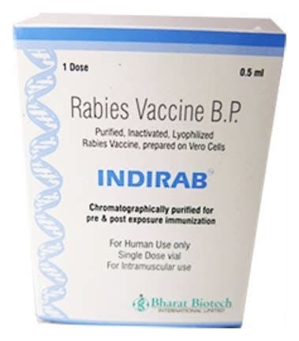

Indirab 2.5 IU/0.5 ml Kuduz Aşisi İçin Liyofilize Toz İçeren Flakon

Ne için kullanılır
KT · Bölüm 1İNDİRAB beraberinde temin edilen seyrelticiyle sulandırıldıktan sonra kullanılan, beyaz, dondurulmuş-kurutulmuş toz olarak 1 veya 10 flakonluk ambalajda bulunmaktadır. Her ambalaj ayrıca seyreltici ampul, enjeksiyon için iğne ve şırınga içerir. İNDİRAB kuduz bir hayvanla maruziyet olmadığı durumlarda, koruyucu amaçlı olarak bağışıklık sağlamak amacıyla kullanılır. Bu tür aşılama özellikle, veterinerler, hayvan bakıcıları, avcılar, doktorlar, kuduz laboratuvarında çalışan personel, üretim personeli, askeri
personel, postacı gibi yüksek riskli işleri olan kişiler için ve kuduz riskine maruz kalan çocuklar için önerilir. İNDİRAB kuduz hastalığı şüphesi olan bir hayvanla temas veya kuduz hayvanlar tarafından ısırılmış kişilerin tedavisinde de kullanılır. İNDİRAB koruyucu içermemektedir ve DSÖ (Dünya Sağlık Örgütü)’nün gerekliliklerini karşılamaktadır. 0.5 mL takdim şekli, DSÖ’nün hayvan ısırıklarına karşı önerdiği tüm intramusküler (kas içi), maruziyet öncesi ve maruziyet sonrası aşılama programlarına uygundur.